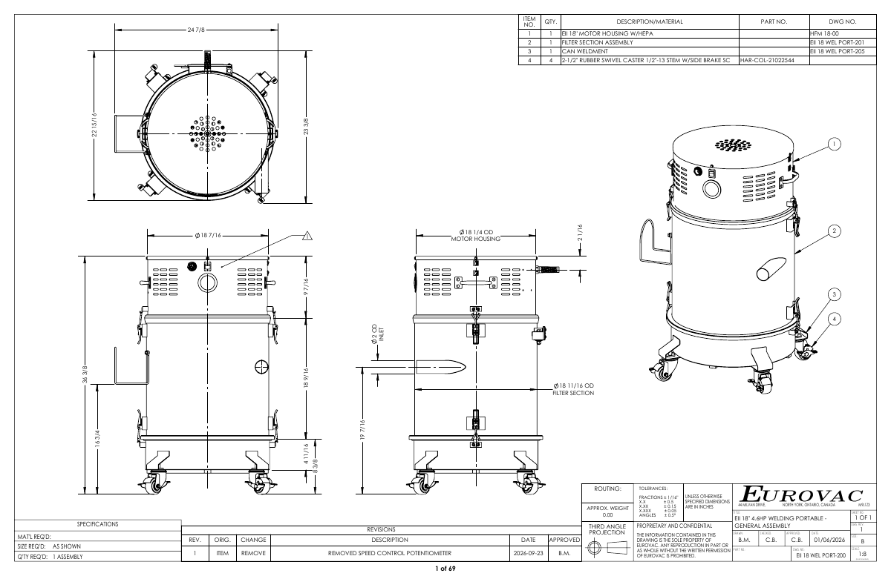

Selected work
Drawing packages
Each preview shows the first sheet. Open a complete PDF to review assemblies, fabrication details, and supporting drawings.
Production mindset
From model to fabrication
These packages reflect the manufacturing sequence I design around.
01Model and detail
3D parts, assemblies, material specifications, and bills of materials.
02Cut and form
Flat patterns, bend allowances, corner reliefs, and press-brake constraints.
03Fit and weld
Weldment drawings, fabrication notes, and assembly fit-up.